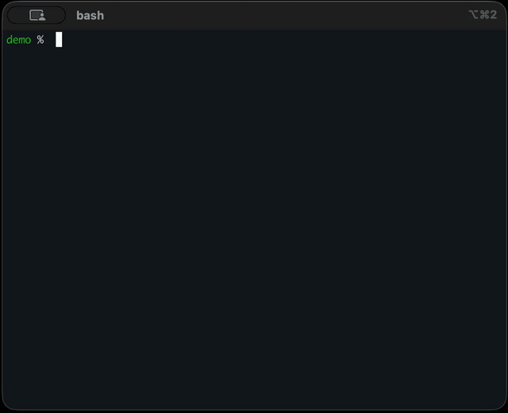

Register Rancher instances, fetch cluster kubeconfigs, refresh them in bulk,
and automatically merge contexts into ~/.kube/config — with an interactive CLI when you want it.

Available via the Krew plugin index.
kubectl krew install sheep